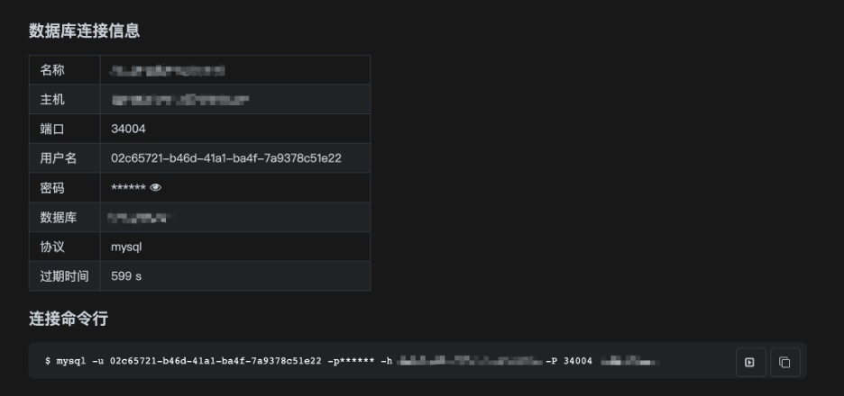
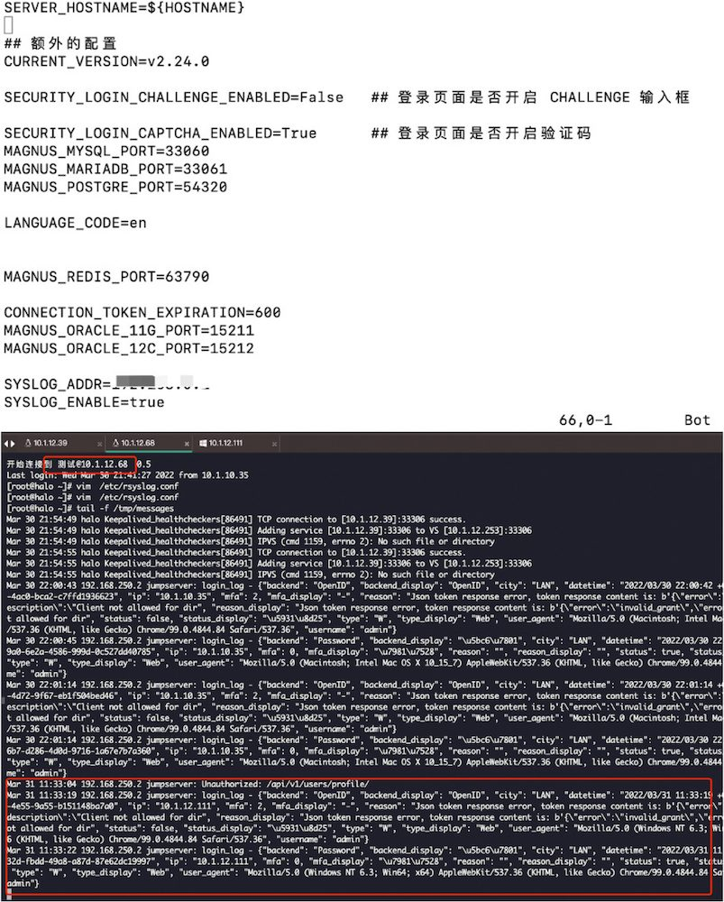

编者注：在2022年8月20日举办的“2022 JumpServer开源堡垒机城市遇见· 武汉站”活动中，东风康明斯资深信息安全工程师蔡阳分享了题为《JumpServer在东风康明斯的实践》的主题演讲。以下内容根据本次演讲整理而成。
东风康明斯发动机有限公司（以下简称为东风康明斯）位于湖北省襄阳市，是湖北省代表性的制造业企业。该公司由东风汽车股份有限公司和美国康明斯公司各占50%的股权比例合资兴建，以柴油发动机制造为主要经营业务。
在工业4.0浪潮的影响之下，包括东风康明斯在内的制造业企业都开始进行数字化转型。“数字化”简而言之就是要打通各个系统，打破数据孤岛，实现各个系统的实时连接，最后建立统一的数据湖等应用体系。
“数字化”对IT资产的连接性要求非常高，特别是对于智能制造企业来说，很多工业设备都需要连接到网络中，这其中的信息安全隐患不容忽视，因此需要从管理、运维等多个方面进行考虑。
资产管理的痛点
对于东风康明斯来说，数字化转型的过程中对IT及工业设备的规范化管理和安全运维是一项非常重要的工作。而在实际的工作中，对IT资产和工业设备的统一运维一直存在着挑战，主要体现在以下几个方面：
1. 资产碎片化，运维工作量大
东风康明斯目前拥有虚拟服务器有300多台，物理机50多台，还有一些工业设备分布在不同的车间，资产和基础设施的分布范围很广，这就导致了日常的审计和运维的工作量都非常大。如果这些工作交给不同的服务商去处理，一方面是工作比较分散不好控制，另一方面也存在着很大的安全隐患。因此，公司急需一个统一的资产管理和运维审计平台来处理这些繁杂的工作；
2. 监管难
作为一家智能制造企业，东风康明斯需要与很多外部供应商进行对接，其中也有很多的外国厂商。在这种情况下，如果没有一个安全审计的平台，用户的访问和操作都会存在风险。如果没有严格的访问管控体系，非常容易发生数据丢失的情况，且无法对系统故障进行有效的追溯。因此，加强对信息系统安全性的监控是急需解决的问题；
3. 需要专业的支持服务
为了减少使用上的学习成本，以及更快速地排查问题，东风康明斯希望这个统一的运维安全管理平台能够提供专业化的日常支持服务，在使用过程中出现任何问题都可以及时向专业的技术人员咨询并得到解答。
为什么选择JumpServer？
经过对市场上主流堡垒机的考察和实际测试，东风康明斯最终选择部署JumpServer堡垒机企业版。相比传统的堡垒机，JumpServer堡垒机所具有的优势包括：
1. 开源
JumpServer是一款开源软件。开源软件在对接东风康明斯的OA系统（也就是工单系统）上具有很大的优势。在OA系统中用户发起权限审批之后，我们可以通过JumpServer在审批后给用户自动赋权，不需要运维人员进行重复性的操作。
此外，JumpServer还是一款每月进行更新迭代的开源软件，在版本的更新过程中会增加很多我们需要的新功能，不断提升我们对堡垒机的使用体验；
2. 安全
在等保2.0规范的要求下，企业对网络安全保护的要求越来越严格。事实上，不管是运维安全审计，还是服务器的专业化管理，都对企业提出了更高的要求，“通过一个统一的平台管理多种类IT资产”已经成为一种必需。JumpServer满足4A规范，能够满足企业运维安全审计的实际要求；
3. 易用
JumpServer这款堡垒机是非常容易上手的，其设计很符合中国用户的使用习惯。此外，JumpServer还提供了多元化的部署方式，并且可以同步管理云上的主机和本地虚拟化平台的主机，有效降低了管理多云资产的成本；
4. 专业服务支持
JumpServer企业版提供四大服务支持：一是提供专业培训，帮助我们系统地学习如何正确地使用JumpServer，避免走弯路；二是提供原厂服务，遇到的技术问题能够快速解决，减少问题排查和定位的时间；三是提供解决方案，针对于企业内部资产管理的需求提供专业的解决方案；四是快速响应，对于我们提出的问题和需求，都能够快速地给予反馈和解决。
JumpServer在东风康明斯的应用场景
1. 部署模式
目前，东风康明斯主要使用JumpServer来管理私有云资产，因此我们最终采用的是主备架构的部署方式，并将数据库MySQL和Redis进行了抽离部署，即MySQL采用主主同步，Redis采用主从同步。录像存储则对接到了NFS服务器之上。

▲ 东风康明斯JumpServer部署架构图
2. 工单管理
外部供应商对公司资源的访问授权需要通过工单进行申请，登录和连接资产等操作都需要管理员进行审批。管理员审批通过后，JumpServer不需要再进行手动授权，可以自动给帐号分配相应的服务器资源以及相应的权限。
▲ 工单申请
3. 对接企业微信
JumpServer支持对接企业微信入口。管理员可以免密登录到JumpServer后台，不需要登录OA系统，在企业微信中就可以使用移动设备直接进行工单审批，大大减少了运维的工作量。
▲ 企业微信工作台添加JumpServer入口
▲ 在企业微信中即可进行工单审批
4. 批量改密
在使用JumpServer之前，我们修改密码需要各个系统的管理员进行手动操作。一方面工作量很大，另一方面密码设置的安全性也不高，经常出现使用弱口令的情况。JumpServer的批量改密功能帮助我们解决了这一问题。
使用JumpServer进行定期批量改密之后，密码设置满足等保合规的要求，还很好地解决了资产种类和数量过多带来的重复工作问题。
▲ 批量改密计划
5. 通过Syslog对接到日志系统
基于JumpServer，东风康明斯通过Syslog对接到日志系统，实现了日志的统一管理。这样一来，我们的操作审计、高危命令、操作审计文件上传/下载等指令都可以得到记录。

▲ 通过Syslog对接到日志系统
6. 数据库代理直连审计
对于公司的研发和DBA同事来说，他们更习惯使用客户端的形式进行数据库连接和操作。JumpServer的Magnus组件支持数据库代理直连审计，在完成数据库审计操作的同时，还保留了用户之前的操作习惯。
▲ 数据库代理直连
总结
对于东风康明斯来说，通过JumpServer堡垒机，我们实现了对服务器等资产的统一管理，实现了运维操作路径的唯一性，满足了我们内部对于安全运维的要求。权限控制方面，基于JumpServer的工单管理、登录控制、命令过滤等功能，有效实现了对外部供应商的权限控制，不必再担心赋权问题的错乱给IT运营带来负面影响。
此外，JumpServer还支持主备高可用的部署方式，提供了容灾备份能力，在面对突发情况时可以迅速启用备份系统，确保系统安全运维能力可持续。